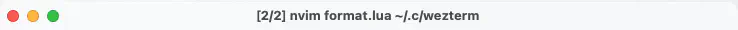
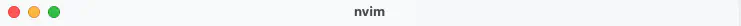

Window Title
format.luaに、以下のコードを追記していきましょう。
1
local wezterm = require 'wezterm'
local function BaseName(s)
return string.gsub(s, '(.*[/\\])(.*)', '%2')
end
wezterm.on('format-window-title', function(tab)
return BaseName(tab.active_pane.foreground_process_name)
end)
この節のポイントはwezterm.on(event_name, callback)です。
wezterm.on causes your specified callback to be called when event_name is emitted. Events can be emitted by wezterm itself, or through code/configuration that you specify.
wezterm.on は、event_name が発生したときに指定したコールバックを呼び出します。イベントは wezterm 自身によって、またはあなたが指定したコード/設定によって発行されます。
この例で言うと、format-window-titleという名前のイベントが発生したら、ここで定義したfuncttionが呼ばれるという動作をします。
The format-window-title event is emitted when the text for the window title needs to be recomputed.
format-window-titleイベントはウィンドウタイトルのテキストを再計算する必要がある場合に発行されます。
再計算と言うよりは再描画というニュアンスに近いでしょうか。
要するにこのイベントが発生した際にウィンドウタイトルとして表示するテキストを指定します。抜粋すると以下の部分ですね。
function(tab)
return BaseName(tab.active_pane.foreground_process_name)
end
無名関数というやつです。
これがBaseName関数にプロセス名を渡して、正規表現で加工された文字列を返しています。
わたしが正規表現の理解に乏しいので説明できませんが、この例では純粋に実行アプリケーション名だけを取り出しています...よね？
before: 
after: 
すみません、これ (↑) タイトルバーです...。
1: なんか偉そうでした。wez さんのサンプル、丸パクリです...😿